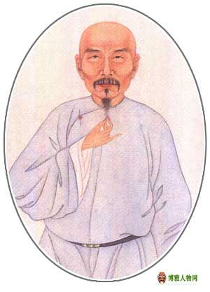

隆回简历
| 隆回来历 |
 |
隆回县名的由来，你知道这两个故事吗？一是白太师赐名，古时候，有个白太师，为官清正，才学渊博。有一年，他奉旨巡视四川、湖南一带，见得沿途山青水秀。一日他偶然发现一对蛟龙西出峨嵋，欲顺长江而去东海。那龙云游至宝庆（今邵阳市），却被巨鳌挡住。白太师为了压住雌龙不让西归，于是在白云岩内修建庵院，自己则削发为僧。然而每至更深人静，总闻巨兽哀鸣之声，令人摧肝裂胆。白太师于是又重登雪峰山顶，发现雄龙已独自先行，方知深夜哀鸣之声，乃是雌龙求偶之意。为了安抚雌龙，便在白云岩口的对面塑一尊雄师石像，与雌龙隔江相望。雌龙以为雄龙已回，便心安神定，哀鸣之声立止。 这时已行至潭家寨的雄龙，突然听不到后面雌龙的叫声了，便又回过头来，向白云山飞腾而去，于是雪峰山南麓司门前一带被命名为“龙回”。另一个为寿福爷赐名
|
| 隆回名人 |
 |
魏源：[清] 清代启蒙思想家、政治家、文学家 (1794～1857)另外还有谭人凤，彭树之，邹汉勋，魏午庄，白天等等，而且，这里有魏源故居，感受近代文人历史文化气息这里应当是首选之地 |
| 梅山文化 |
 |
20世纪80年代中期至90年代末，梅山文化的概念在学界被正式提出，并逐渐成形，这一时期梅山文化研究有几个代表性事件： 一是新化、安化、冷水江等地的文化馆干部从民间文学角度切入，撰写了梅山文化研究论文，并于1989年8月在长江文化研讨会上宣读，《人民日报》（海外版）予以报道，引起了海内外学界的高度关注； 二是法国国家科学院东南亚暨华南人类研究所原所长雅克·勒穆瓦纳在图卢兹地区发现旅居法国瑶人流传的手抄本经《又到逰梅山三十六洞念》后，追寻到湘中梅山； 三是中央民族大学教授胡起望于1991年发表《论瑶传道教》，认为“梅山文化可称为梅山教或瑶传道教”。
|
| 隆回特产 |
 |
隆回特产十分丰富，例如隆回金银花，隆回龙牙百合，猪血丸子，隆回糯米糍粑，隆回辣椒，煎虾碌，虽然有很多我都没有听说过，但是，来隆回，猪血丸子不能不吃，金银花茶不能不品！ |